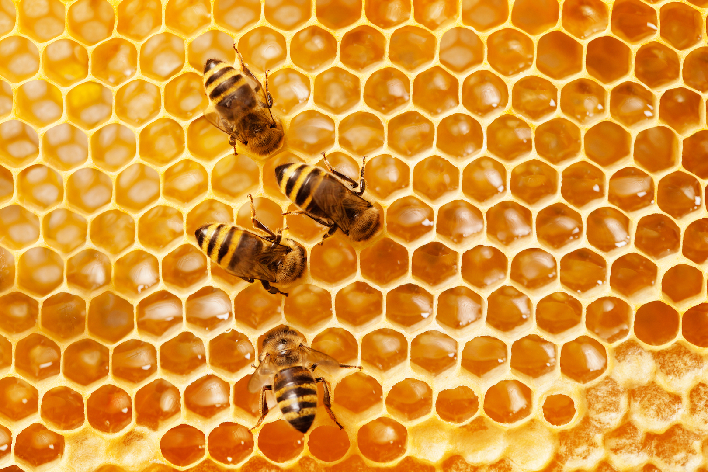
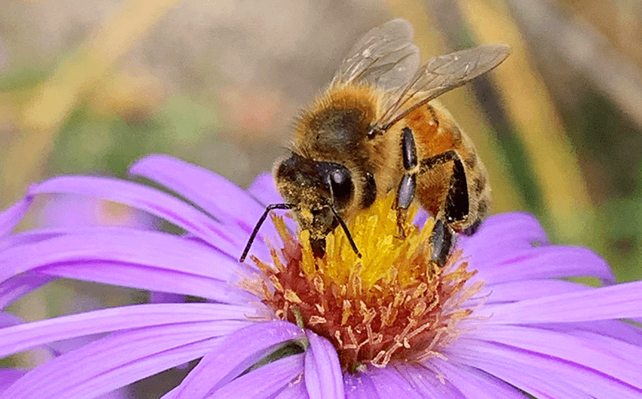
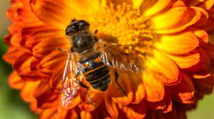
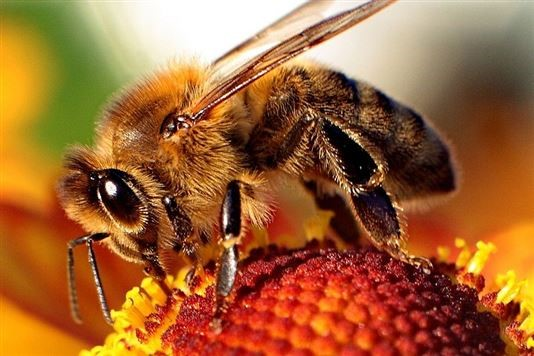
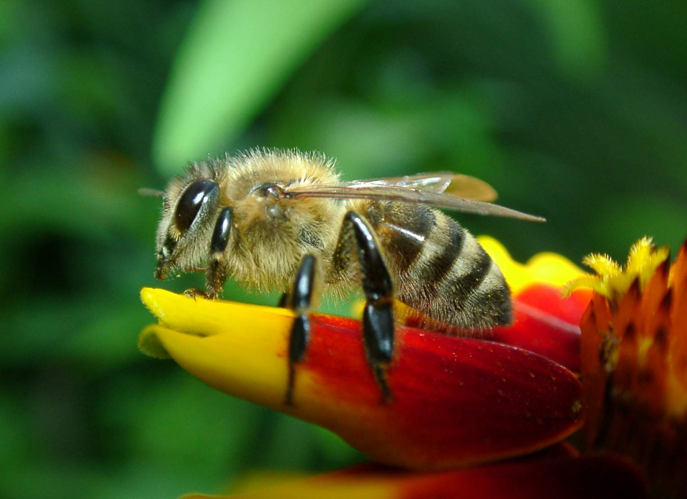
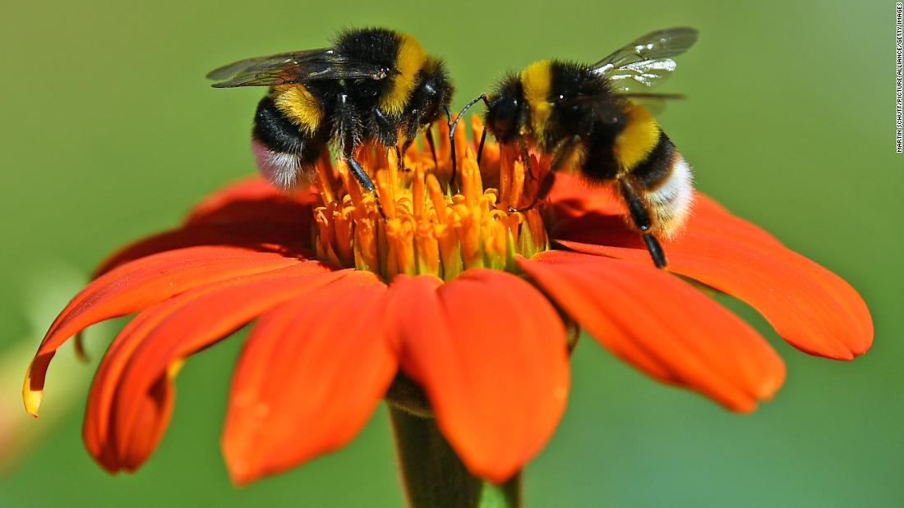
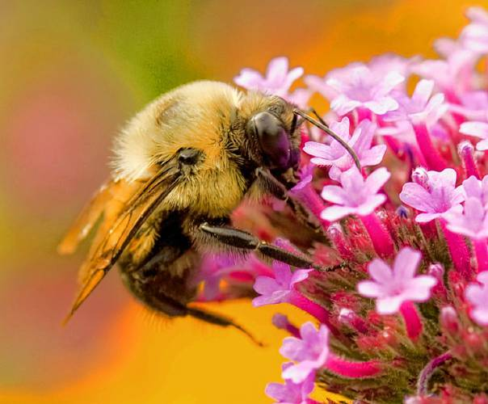
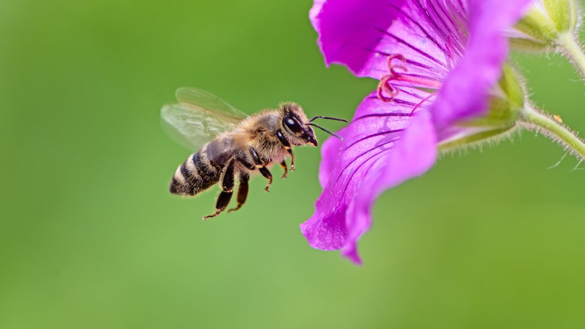

| Foto | Nome | Specie | Descrizione luogo | Posizione |
|---|---|---|---|---|
| Ape sperduta? | Ape mellifera mellifera | Sembrano le api che ho visto quando ero in vacanza,non sembra però lo stesso habitat | Vicolo Ferrante,SA | |
|  | Obbiettivo raggiunto | Ape mellifera mellifera | Sono riuscito a fotografare l'alveare,ora credo ne inizierò il monitoraggio. | Vicolo Ferrante,SA |
|  | Ho trovato l'alveare!!! | Ape mellifera ligustica | Ho trovato l'alveare ma non sono riuscito ad avvicinarmi abbastanza per una foto.Si trova su un albero al delimitare di un boschetto | Vicolo Ferrante,SA |
|  | Investigazione al culmine | Ape mellifera ligustica | Credo di aver capito da dove arrivano le api del giardino dietro casa.Prossima volta lo fotografo | Vicolo Ferrante,SA |
|  | Ape Comunale | Ape mellifera ligustica | Nel parco comunale del paese ho visto un ape e ne ho approfittato per una foto | Via Roma,SA |
|  | Inizia la ricostruzione | Ape mellifera mellifera | Durante l'ultimo giorno del mio viaggio sono tornato nel bosco e ho visto un sacco di api,credo stiano ricostruendo l'alveare | Riserva Naturale Alberobello |
|  | Povero alveare | the Bird | Sono tornato dopo un paio di giorni all'alveare, qualcuno lo ha rimosso,ho trovato solo queste due api nei ditorni | Riserva Naturale Alberobello |
|  | Segnalazione in vacanza | the Bird | Sono dovuto partire per un viaggio fuori città , ho trovato un alveare nei boschi. Le api sembravano essere molto indaffarate | Riserva Naturale Alberobello |
|  | In cerca dell'alveare | Ape mellifera ligustica | Sono tornato nel giardino dietro casa e ho individuato altri 2 esemplari ,sembrano della stessa specie. Sto cercando di capire da dove arrivino | Via Spinosa,SA |
 |
La mia prima Segnalazione!!! | Ape mellifera ligustica | Ho avvistato un ape in un giardino dietro casa che impollinava un fiore. Non ne ho viste altre nei dintorni. | Via Spinosa,SA |